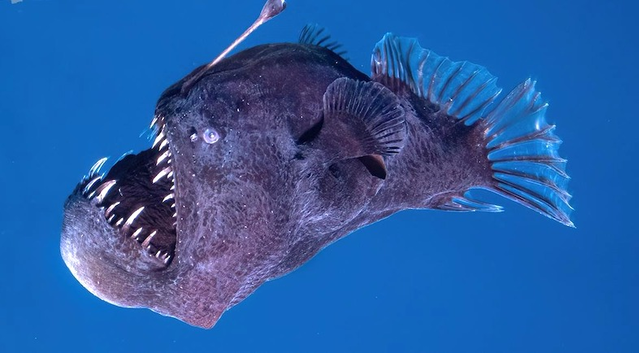
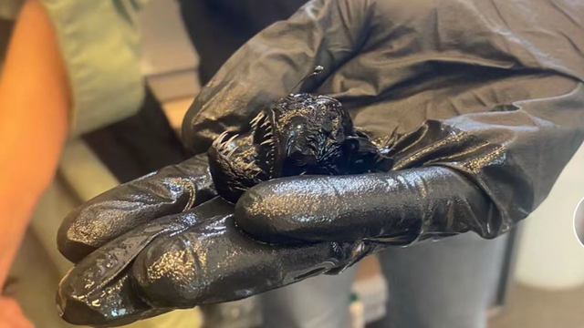

Pode ser encontrado dos 1,5 aos 4 mil metros de profundidade. Pode ser conhecido popularmente como peixe lanterna, por conta de sua isca luminosa usada para a caça. Possui várias das características presentes em animais abissais, como os olhos grandes e a bioluminescência.
Um tempo atrás, um espécime foi flagrado subindo até a superfície, e foi coletado. Muitas pessoas se surpreenderam com o tamanho do animal, que por conta do filme Procurando Nemo, onde aparece um desses peixes, dava a impressão de ser bem grande. Apesar disso, a maioria chega a medir 18 centímetros, onde denota-se o dimorfismo sexual, pois só as fêmeas chegam a esse tamanho, enquanto os machos crescem apenas até 3 centímetros.

